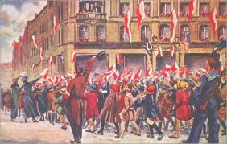
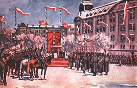
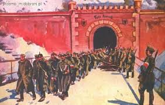

Polskie powstania narodowe
Polskie powstania narodowe
Według kierownika Zakładu Historii Wojskowej Instytutu Historii UAM w Poznaniu Zbigniewa Pilarczyka, powstanie zakończyło się sukcesem dzięki dobrej organizacji zrywu, ale także wysokiej samoorganizacji wielkopolskiego społeczeństwa.
 Bezpośrednią przyczyną wybuchu powstania była wizyta w Poznaniu wybitnego pianisty, męża stanu Ignacego Jana Paderewskiego. Jego przyjazd 26 grudnia był okazją do zorganizowania manifestacji patriotycznej. 27 grudnia 1918 roku Polacy gromadzili się pod budynkiem Bazaru, w którym zatrzymał się Paderewski. Niemcy zorganizowali kontrpochód, jego uczestnicy zniszczyli po drodze siedzibę Komisariatu Naczelnej Rady Ludowej - legalnej polskiej władzy państwowej, uznanej przez Polski Sejm Dzielnicowy. W gotowości bojowej czekały polskie oddziały Służby Straży i Bezpieczeństwa oraz Straży Ludowej. Przed godziną 17. sytuacja wymknęła się spod kontroli. Padł pierwszy strzał - wybuchło powstanie.
 W pierwszym okresie walk powstańczych, do końca roku, Polakom udało się zdobyć większą część Poznania. Ostatecznie miasto zostało wyzwolone 6 stycznia, kiedy to przejęto lotnisko Ławica. W polskie ręce wpadło kilkaset samolotów. Do połowy stycznia wyzwolono większą część Wielkopolski. Pod koniec stycznia 1919 roku Niemcy rozpoczęli ofensywę na froncie północnym, w połowie lutego przenieśli siedzibę naczelnego dowództwa do Kołobrzegu, co miało świadczyć o planach ofensywnych przeciwko Wielkopolsce. W sukurs Polakom przyszli politycy Ententy. Zdobycze powstańców potwierdził rozejm w Trewirze podpisany pomiędzy Niemcami a państwami Ententy 16 lutego 1919 r. W myśl jego ustaleń, front wielkopolski został uznany za front walki państw sprzymierzonych.
 Ostateczne zwycięstwo przypieczętował podpisany 28 czerwca 1919 traktat wersalski, w wyniku którego do Polski powróciła - z wyjątkiem skrawków - prawie cała Wielkopolska. Powstanie zakończyło się sukcesem. Według Zbigniewa Pilarczyka, powstanie wielkopolskie, podobnie jak i inne wydarzenia historyczne, nie oparło się obrastaniu mitami. Wynika to m.in. z małej liczby źródeł i dokumentów opisujących powstańczy zryw.